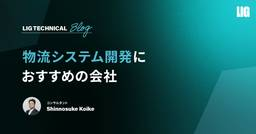

株式会社LIG(リグ)｜DX支援・システム開発・Web制作テック の記事一覧 | 株式会社LIG(リグ)｜DX支援・システム開発・Web制作
https://liginc.co.jp
DX with Global Team. 株式会社LIG(リグ)は、システム開発・Web制作・マーケティング支援を中心に、グローバルリソースを活用したDX支援を行うプロフェッショナル集団です。
フィード
【2026年最新】Google AI StudioとGeminiの違いとは？使い分けと活用法を徹底解説 20
20
株式会社LIG(リグ)｜DX支援・システム開発・Web制作テック の記事一覧 | 株式会社LIG(リグ)｜DX支援・システム開発・Web制作
こんにちは、メディアディレクターのヒロです。 みなさん、Gemini使ってますか？ 僕は毎日のように使ってるんですけど、最近まで大きな勘違いをしてたんですよね。 実はGeminiには 2つの入り口 があって、それぞれぜん […]
4日前
そろそろUIリニューアルすべき？5つのチェック項目で判断する基準と進め方
株式会社LIG(リグ)｜DX支援・システム開発・Web制作テック の記事一覧 | 株式会社LIG(リグ)｜DX支援・システム開発・Web制作
こんにちは。LIGでUI/UXデザイナーをしている鎌です。 「サービスをリリースしてから5年以上経つけど、UIはほとんど変わっていない」 「機能は追加しているけど、そろそろUIも見直すべき？」 こんな悩みを抱えているサー […]
5日前

物流管理システム開発会社おすすめ10選│選び方や種類も解説
株式会社LIG(リグ)｜DX支援・システム開発・Web制作テック の記事一覧 | 株式会社LIG(リグ)｜DX支援・システム開発・Web制作
物流管理システムの導入やリプレイスを検討しているものの、「どの開発会社に頼めばいいかわからない」と悩んでいる方は多いのではないでしょうか。 物流管理システムは業務の根幹を支えるものだけに、開発会社の選定は導入の成否を左右 […]
5日前

大規模会員システムの技術スタック選定【Auth0・Cognito・HubSpot・FlutterFlow】
株式会社LIG(リグ)｜DX支援・システム開発・Web制作テック の記事一覧 | 株式会社LIG(リグ)｜DX支援・システム開発・Web制作
こんにちは、LIGのDXチームでコンサルタントをしている、小池です。 最近、大規模な会員システムの開発案件が増えており、その中でも特に悩ましいのが技術スタックの選定です。従来のスクラッチ開発では開発期間が長期化する一方、 […]
10日前
Sora 2（ソラ2）とは？OpenAIの動画生成AIの使い方と活用事例
株式会社LIG(リグ)｜DX支援・システム開発・Web制作テック の記事一覧 | 株式会社LIG(リグ)｜DX支援・システム開発・Web制作
こんにちは！ AI推進チームの山﨑です。 OpenAIが2025年9月にリリースした動画生成AI「Sora 2（ソラ2）」。 テキストや画像から動画を生成できるSora 2は、物理法則の再現を得意とし、音声生成や自分の顔 […]
11日前
デザイン力と粘り強い伴走が支えた3年間｜ダイヤモンド建機様「ConPath-D」開発事例
株式会社LIG(リグ)｜DX支援・システム開発・Web制作テック の記事一覧 | 株式会社LIG(リグ)｜DX支援・システム開発・Web制作
こんにちは、LIGで第1 ITソリューション事業部 部長兼プロジェクトマネージャーを務めている、小池です。 弊社LIGでは、株式会社ダイヤモンド建機様が提供する物品管理システム「ConPath-D」の開発をお手伝いしてい […]
18日前
倉庫管理システム開発でおすすめの開発会社10社【2026年版】
株式会社LIG(リグ)｜DX支援・システム開発・Web制作テック の記事一覧 | 株式会社LIG(リグ)｜DX支援・システム開発・Web制作
物流業務の効率化や在庫管理の精度向上を目指す企業にとって、倉庫管理システム（WMS）の導入は避けて通れない課題です。しかし、既製のパッケージ製品では自社の複雑な業務フローに対応できず、結局は手作業での調整が必要になるケー […]
20日前
AI×マーケティングの「やってみた」を集めたLT会開催！3/11(水)19時半＠LIG本社
株式会社LIG(リグ)｜DX支援・システム開発・Web制作テック の記事一覧 | 株式会社LIG(リグ)｜DX支援・システム開発・Web制作
「AIの流れが早すぎて、最新の情報を追いきれていない」 「ツールは触ってみたものの、実務で使えるレベルまで落とし込めていない」 「生成AIをマーケティング業務に活かしたいけど、具体的に何から始めればいいかわからない」 そ […]
25日前
社内ナレッジベースができるまで～忘却への抵抗～
株式会社LIG(リグ)｜DX支援・システム開発・Web制作テック の記事一覧 | 株式会社LIG(リグ)｜DX支援・システム開発・Web制作
テクニカルディレクターのイナッチです。 Webディレクターとしてキャリアを開始して14年ほどになりますが、ここ数年はテクニカルディレクターやPMと名乗ることが多くなってきました。LIG歴はまもなく6年となります。 今回は […]
1ヶ月前
【非エンジニア向け】Bigquery×Claudeを連携してサイト分析を効率化する方法
株式会社LIG(リグ)｜DX支援・システム開発・Web制作テック の記事一覧 | 株式会社LIG(リグ)｜DX支援・システム開発・Web制作
「自社サイトの数値分析、もっと楽にできないかな〜」と思ったことがあるみなさんに朗報です。 AIとGA4などのツールを連携すれば、AIと会話するだけで簡単にサイト分析ができるようになります！ 特におすすめなのが、BigQu […]
1ヶ月前
AIのセキュリティが気になるならローカルLLM！LM Studioで環境構築する方法
株式会社LIG(リグ)｜DX支援・システム開発・Web制作テック の記事一覧 | 株式会社LIG(リグ)｜DX支援・システム開発・Web制作
インターネットのみなさんこんにちは。みなさんは、自力で文章を書いていますか？ 僕はもう無理です。企業からのメールの返信、上司からのSlackメッセージ、活動報告書。何か文章を書く前に、ChatGPTに投げています。ここだ […]
2ヶ月前
生成AIを「業務に使える」に変える。LIGの完全オーダーメイド型研修
株式会社LIG(リグ)｜DX支援・システム開発・Web制作テック の記事一覧 | 株式会社LIG(リグ)｜DX支援・システム開発・Web制作
こんにちは。LIGで生成AIコンサルティングを担当しているかけるです。 「AI研修を実施したのに、日々の業務でまったく使われていない」 「ChatGPT を導入したけど、活用できる人が一部に偏っている」 そんな声をよく伺 […]
2ヶ月前
テストだけで200万円？システム開発のテスト費用の内訳と削ってはいけない理由
株式会社LIG(リグ)｜DX支援・システム開発・Web制作テック の記事一覧 | 株式会社LIG(リグ)｜DX支援・システム開発・Web制作
こんにちは。システム開発部門でPM（プロジェクトマネージャー）を兼務している鎌です。 Webサービスやアプリ開発の見積もりをご覧になったお客様から、よくこのような驚きの声をいただきます。 「開発費が1,500万円で、その […]
2ヶ月前
PMOが多国籍チームで磨いた「伝え方」8つの工夫
株式会社LIG(リグ)｜DX支援・システム開発・Web制作テック の記事一覧 | 株式会社LIG(リグ)｜DX支援・システム開発・Web制作
こんにちは、LIGでPMOとして働いているFANです。 「あとでやっておきます」——この一言の捉え方が人によってぜんぜん違って、期待値のズレから大混乱になった経験はありませんか？ 私は以前、日本・中国・モンゴル・ベトナム […]
2ヶ月前
文脈を読むAI・Claudeで仕事を時短する3つの実践プロンプト【2026】
株式会社LIG(リグ)｜DX支援・システム開発・Web制作テック の記事一覧 | 株式会社LIG(リグ)｜DX支援・システム開発・Web制作
こんにちは。LIGでコンテンツディレクターをしている、ヒロです。 カレンダーをめくり、迎えた2026年の1月。新年の清々しい空気とは裏腹に、オフィスには容赦なく「いつもの日常」が戻ってきました。 みなさん、すでに息切れし […]
2ヶ月前
【LIGNEWS】「クイズ！この社員は誰？」AIを使った社内交流ランチを開催しました！
株式会社LIG(リグ)｜DX支援・システム開発・Web制作テック の記事一覧 | 株式会社LIG(リグ)｜DX支援・システム開発・Web制作
※本企画はこちらの記事を参考にさせていただきました！ AIを活用した新しい相互理解ワークをやってみた こんにちは、総務のなおです。 先日、社内で「AIランチ交流会」を開催しました！ AIが作っ […]
2ヶ月前
物品管理とは？業務効率化のコツと成功のポイントをプロにインタビュー
株式会社LIG(リグ)｜DX支援・システム開発・Web制作テック の記事一覧 | 株式会社LIG(リグ)｜DX支援・システム開発・Web制作
「どこに何の機材があるのか把握しきれない……」 「月末の棚卸と報告書作成に時間がかかる……」 建設現場における煩雑な物品管理には、多くの担当者様がお悩みなのではないでしょうか。 「Excelや手書きでの管理で何とかなって […]
4ヶ月前
プロ厳選おすすめシステム開発会社22社│選び方・費用も解説
株式会社LIG(リグ)｜DX支援・システム開発・Web制作テック の記事一覧 | 株式会社LIG(リグ)｜DX支援・システム開発・Web制作
システム開発は、会社の選び方しだいで成否が分かれます。とはいえ、単純に見積もり費用だけで比較するわけにはいかず、パートナー選びに慎重になるのは当然のことです。 そこで、信頼できる大手や実績豊富なシステム開発会社の中から、 […]
4ヶ月前
同業目線で本当におすすめのECサイト制作会社18選【2026】
株式会社LIG(リグ)｜DX支援・システム開発・Web制作テック の記事一覧 | 株式会社LIG(リグ)｜DX支援・システム開発・Web制作
💡【Pick Up】信頼できるECサイト制作会社3選 株式会社LIG｜│UI/UXデザインに強み。国内大手・海外ECの開発・運用実績あり 株式会社ecbeing｜東証プライム上場の大手プラットフォーム開発 […]
4ヶ月前
生成AIで社歌（ラップ）を爆速で作ってみた【Gemini × ElevenLabs】
株式会社LIG(リグ)｜DX支援・システム開発・Web制作テック の記事一覧 | 株式会社LIG(リグ)｜DX支援・システム開発・Web制作
こんにちは、LIGのAIコンサルタント・かけるです。 先日、LIGでは20周年の記念パーティーを開催しました。 「会場で流すBGMをAIで作って」という無茶振りオーダーがあり、Gemini（Google AI Studi […]
4ヶ月前